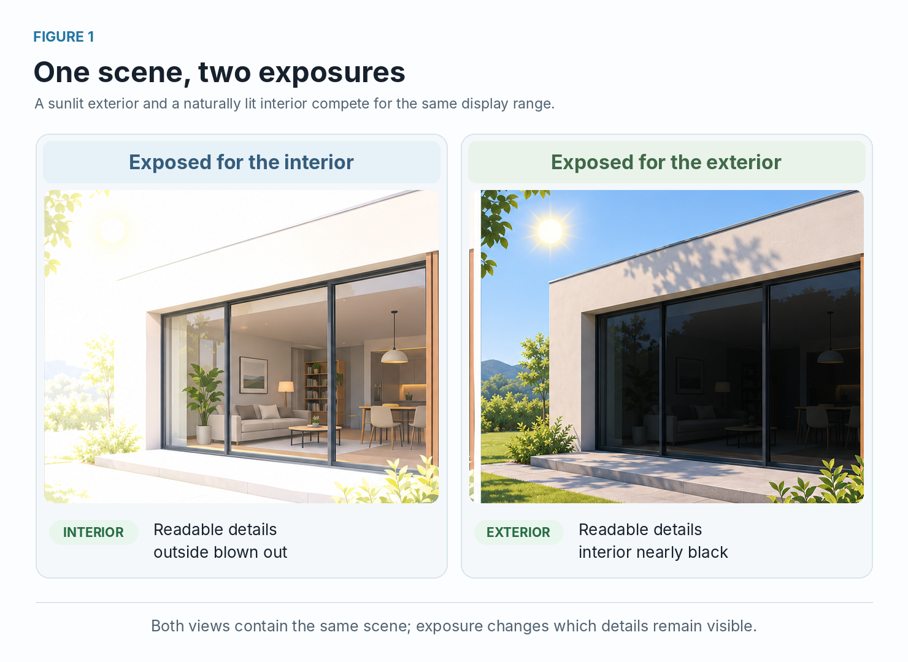
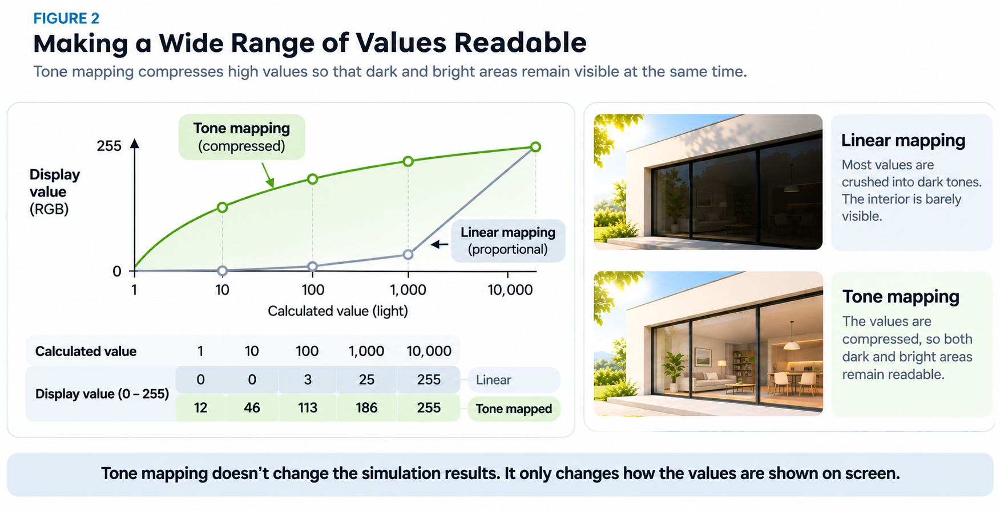
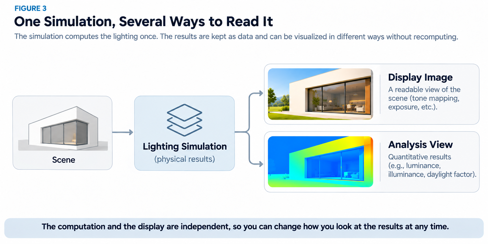

Series · Rendering
Journal ·
What If Your Simulation Works, but the Image Doesn't?
In a daylight simulation, looking at the inside of a house from outside in full sunlight creates a simple problem: how do you see both correctly on a screen?
At first glance, it sounds trivial. The simulation computes values, the screen displays an image, problem solved.
Except the scale is the problem.
A dark interior and a sunlit exterior do not live in the same range. The computed lighting values can be far apart, while the screen only has a limited display range. If you map everything directly, the low values get crushed into black. If you push the exposure to reveal them, the brightest areas blow out into white.
That was the practical problem I ran into while developing DL-Instant, a daylight simulation tool. The engine could compute the light. The harder part was making the result readable.


Expose for the interior, and you can read the room, but the exterior becomes washed out. Expose for the exterior, and you preserve the bright outdoor details, but the inside becomes nearly black.
So the question was not whether the simulation worked. It did. The question was how to turn a very wide range of computed values into something a human could actually read on screen.
That is where tone mapping comes in.
Tone mapping does not improve the physical simulation itself. It changes how the results are shown. Instead of keeping a direct proportional relationship between computed light values and displayed pixel values, it compresses the range so that dark and bright areas can remain visible at the same time.


Without tone mapping, most of the image range is effectively wasted on the brightest values. Mid-range and lower values are squeezed so close to black that they become hard to distinguish. With tone mapping, the high values are compressed more aggressively, which frees room to separate the darker and middle ranges.
For me, that solved one part of the problem: making the scene readable enough to navigate and understand intuitively.
Architects and consultants were not using the software just to look at nice images. They needed to assess lighting conditions, inspect quantitative results, and reason about the building. A tone-mapped image is useful for understanding the scene, but its colors and brightness are not measurements by themselves.
DL-Instant used progressive path tracing: each pixel accumulated contributions from sampled light paths, gradually refining its estimate as more samples arrived. I kept those results separate from the displayed image, so tone mapping and false colors could use them without restarting the calculation.


That separation mattered in practice. I could adjust the exposure or switch to false colors while the rendering continued to improve.
A readable image and a useful measurement don't serve the same purpose.
But progressive rendering comes with another challenge. Early on, only a few light paths have been sampled, leaving the image noisy and some details difficult to distinguish. Tone mapping can make the contrast readable, but it cannot remove that noise.
Discussion
Have you run into similar trade-offs between numerical results and visual representation? I'd be interested to hear how you approached them.
Exploring next
Planned article
Can a Noisy Render Still Be Readable?
What if the renderer already knows enough about the scene to help remove noise without losing its details?